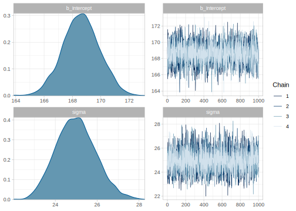

3.1 Deriving the posterior through sampling
Let's say that we want to derive the posterior of the model from 2.1, that is, the posterior distribution of the Cloze probability of "umbrella", \(\theta\), given the following data: a word (e.g., "umbrella") was answered 80 out of 100 times, and assuming a binomial distribution as the likelihood function, and \(Beta(a=4,b=4)\) as a prior distribution for the Cloze probability. If we have samples from the posterior distribution of \(\theta\), instead of an analytically derived posterior distribution, given enough samples we will have a good approximation of the real posterior distribution. Getting samples from the posterior will be the only viable option in the models that we will discuss in this book. By "getting samples", we are talking about a situation analogous to when we use rbinom or rnorm to obtain samples from a particular distribution.
Thanks to probabilistic programming languages, it will be relatively straightforward to get these samples, and we will discuss how we will do it in more detail in the next section. For now let's assume that we used some probabilistic programming language to obtain 20000 samples from the posterior distribution of the Cloze probability, \(\theta\): 0.785, 0.798, 0.717, 0.795, 0.724, 0.777, 0.818, 0.758, 0.75, 0.836, 0.712, 0.85, 0.75, 0.745, 0.767, 0.849, 0.759, 0.792, 0.787, 0.762, ... Figure 3.1 shows that the approximation of the posterior looks quite similar to the real posterior. And in fact the difference between the true and the approximated mean and variance are -0.00007 and 0.000002 respectively.
FIGURE 3.1: Histogram of the samples of \(\theta\) from the posterior distribution calculated through sampling in gray; density plot of the exact posterior in red.
3.1.1 Bayesian Regression Models using 'Stan': brms
The surge in popularity of Bayesian statistics is closely tied to the increase in computing power and the appearance of probabilistic programming languages, such as WinBUGS (Lunn et al. 2000), JAGS (Plummer 2016), and more recently pymc3 (Salvatier, Wiecki, and Fonnesbeck 2016), Turing (Ge, Xu, and Ghahramani 2018), and Stan (Carpenter et al. 2017). These statistical languages allow the user to define models without having to deal (for the most part) with the complexities of the sampling process. However, they require learning a new language since the user has to fully specify the statistical model using a particular syntax.6 Furthermore, some knowledge of the sampling process is needed to correctly parameterize the models and to avoid convergences issues (these topics will be covered in detail later in this book).
There are some alternatives that allow Bayesian inference in R without having to fully specify the model "by hand". The packages rstanarm (Goodrich et al. 2018) and brms (Bürkner 2019) provide Bayesian equivalents of many popular R model-fitting functions, such as (g)lmer (Bates et al. 2015); both these packages use Stan for the back-end estimation and sampling. JASP (JASP Team 2019) provides a graphical user interface for both frequentist and Bayesian modeling, and is intended to be an open-source alternative to SPSS.
We will focus on brms in the first part of the book. This is because it can be useful for a smooth transition from frequentist models to their Bayesian equivalents. Although brms is powerful enough to satisfy the statistical needs of many cognitive scientists, it has the added benefit that the Stan code can be inspected (with the functions make_stancode and make_standata), allowing the users to customize their models or learn from the code produced internally by brms to eventually transition to write the models entirely in Stan.
3.1.1.1 A simple linear model: A single participant pressing a button repeatedly
We'll use the following example to illustrate the basic steps for fitting a model. Let's say we have data from a participant repeatedly pressing the space bar as fast as possible, without paying attention to any stimuli. The data are reaction times in milliseconds in each trial. We would like to know how long it takes to press a key when there is no decision involved.
Let's model the data with the following assumptions:
- There is a true underlying time, \(\mu\), that the participant needs to press the space bar.
- There is some noise in this process.
- The noise is normally distributed (this assumption is questionable given that reaction times are generally skewed; we fix this assumption later).
This means that the likelihood for each observation \(n\) will be:
\[\begin{equation} \begin{aligned} rt_n \sim Normal(\mu, \sigma) \end{aligned} \tag{3.2} \end{equation}\]where \(n =1 \ldots N\), and \(rt\) is the dependent variable (reaction times in milliseconds). The variable \(N\) indexes the total number of data points. The letter \(\mu\) indicates the location of the normal distribution function; the location parameter shifts the distribution left or right on the horizontal axis. For the normal distribution, the location is also the mean of the distribution. The letter \(\sigma\) indicates the scale of the distribution; as the scale decreases, the distribution gets narrower. This compressing approaches a spike (all the probability mass in one point) as the scale parameter goes to zero. For the normal distribution, the scale is also its standard deviation.
For a frequentist model that will give us the maximum likelihood estimate (the sample mean) of the time it takes to press the space bar, this would be enough information to write the formula in R, rt ~ 1, and plug it into the function lm() together with the data: lm(rt ~ 1, data). The meaning of the 1 here is that there is no predictor associated with this parameter, and lm will estimate the so-called intercept of the model, in our case \(\mu\).
For a Bayesian model, we will also need to define priors for the two parameters of our model. Let's say that we know for sure that the time it takes to press a key will be positive and lower than a minute (60000ms), but we don't want to make a commitment regarding which values are more likely. We encode what we know about the noise in the task in \(\sigma\): we know that this parameter must be positive and we'll assume that any value below 2000ms is equally likely. These priors are in general strongly discouraged because even when we know very little, a flat (or very wide) prior will almost never be the best approximation of what we know. We'll use them in this section for pedagogical purposes; the next chapter will show more realistic uses of priors.
\[\begin{equation} \begin{aligned} \mu &\sim Uniform(0, 60000) \\ \sigma &\sim Uniform(0, 2000) \end{aligned} \tag{3.3} \end{equation}\]We'll first load the data from data/button_press.csv:
df_noreading_data <- read_csv("./data/button_press.csv")
df_noreading_data## # A tibble: 361 x 2
## rt trialn
## <dbl> <dbl>
## 1 141 1
## 2 138 2
## 3 128 3
## 4 132 4
## 5 126 5
## # … with 356 more rowsIt is a good idea to look at the distribution of the data before doing anything else; see Figure 3.2. As we suspected, the data look a bit skewed, but we ignore this for the moment.
ggplot(df_noreading_data, aes(rt)) +
geom_density() +
ggtitle("Button-press data")FIGURE 3.2: Visualizing the data
3.1.1.1.1 Specifying the model in brms
We'll fit the model defined by equations (3.2)-(3.3) with brms in the following way; as we mentioned before the uniform distribution is not entirely appropriate and we will ignore this warnings for now:
fit_press <- brm(rt ~ 1,
data = df_noreading_data,
family = gaussian(),
prior = c(
prior(uniform(0, 60000), class = Intercept),
prior(uniform(0, 2000), class = sigma)
),
chains = 4,
iter = 2000,
warmup = 1000
)## Warning: It appears as if you have specified an upper bounded prior on a parameter that has no natural upper bound.
## If this is really what you want, please specify argument 'ub' of 'set_prior' appropriately.
## Warning occurred for prior
## sigma ~ uniform(0, 2000)The brms code has some differences from a model fit with lm (or lmer from the lme4 package). At this beginning stage, we'll focus on the following options:
- The term
family = gaussian()makes explicit that the underlying likelihood function is a normal distribution (Gaussian and normal are synonyms) that is implicit in lm(er). Other linking functions are possible, exactly as in the glm(er) function. - The term
priortakes as argument a vector of priors. Although this specification of priors is optional, the researcher should always explicitly specify each prior. Otherwise,brmswill define a prior by default, which may or may not be appropriate for the research area. - The term
chainsrefers to the number of independent runs for sampling (by default four). - The term
iterrefers to the number of iterations that the sampler makes to sample from the posterior distribution of each parameter (by default 2000). - The term
warmuprefers to the number of iterations from the start of sampling that are eventually discarded (by default half ofiter).
The last three options (together with control that was not used before) determine the behavior of the sampler algorithm: the No-U-Turn Sampler (NUTS; Hoffman and Gelman 2014) extension of Hamiltonian Monte Carlo (Duane et al. 1987; Neal 2011). We will discuss sampling in more depth in chapter ??, but we explain here the basic process.
3.1.1.1.2 Sampling and convergence in a nutshell
We start four chains independent from each other. Each chain "searches" for samples of the posterior in a multidimensional space, where each parameter corresponds to a dimension, and the shape of this space is determined by the priors and the likelihood. The chains start in random locations and in each iteration they take one sample each. The samples at the beginning do not belong to the posterior distribution. Eventually, the chains end up in the vicinity of the posterior distribution, and from that point onwards the samples will belong to the posterior. That means that at the beginning the samples from the different chains will be far from each other, but that at some point they will converge. While there are no guarantees that we are running the chains for enough iterations, the default values of brms (and Stan) are in many cases enough to achieve that, and when they are not, we will receive warnings with recommendations. If the chains converged to the same distribution, by removing the "warmup" (also called burn-in) samples--by default half of a total of 2000 iterations--, we make sure that we do not get samples from the path to the posterior distribution. Figure 3.3 shows the path of the chains from the warmup to the posterior and it is called a trace or caterpillar plot. We show the warmup for illustration purposes, but generally one should inspect the chains after the point where we assume that convergence was achieved (i.e., after the dashed line). The chains should look like one "fat hairy caterpillar". Compare the trace plot of our model in Figure 3.3 with the traceplot of a model that did not converge in Figure 3.4. Trace plots are, however, not always that obvious. Traceplots might look fine, and still the model may not have converged. Fortunately, Stan automatically runs diagnostics with the information from the chains, and if there are no warnings after fitting the model and the trace plots look fine, we can be reasonably sure that the model converged and our samples are from the true posterior distribution. However, we do need to run more than one chain (preferably four), with a couple of thousands of iterations (at least) so that the diagnostics will work.
FIGURE 3.3: Trace plot of our brms model
FIGURE 3.4: Trace plot of a model that did not converge.
3.1.1.1.3 Output of brms
If the model converged (i.e., if we didn't have any warning messages), the output of the sampling process shows the samples of the posterior distributions of each of the parameters:
posterior_samples(fit_press) %>% str() ## 'data.frame': 4000 obs. of 3 variables:
## $ b_Intercept: num 168 169 167 168 170 ...
## $ sigma : num 25.9 24.5 24.4 24.3 23.8 ...
## $ lp__ : num -1688 -1688 -1689 -1688 -1689 ...Notice that b_Intercept corresponds to our \(\mu\) and that lp is not really part of the posterior, it's the density of the unnormalized posterior for each iteration.
We can plot the histogram and the trace plot after the warmup:
plot(fit_press)
And brms provides a nice summary:
fit_press
# posterior_summary(fit_press) is also useful## Family: gaussian
## Links: mu = identity; sigma = identity
## Formula: rt ~ 1
## Data: df_noreading_data (Number of observations: 361)
## Samples: 4 chains, each with iter = 2000; warmup = 1000; thin = 1;
## total post-warmup samples = 4000
##
## Population-Level Effects:
## Estimate Est.Error l-95% CI u-95% CI Rhat Bulk_ESS Tail_ESS
## Intercept 168.66 1.35 166.04 171.27 1.00 3237 2492
##
## Family Specific Parameters:
## Estimate Est.Error l-95% CI u-95% CI Rhat Bulk_ESS Tail_ESS
## sigma 25.02 0.97 23.23 26.96 1.00 3389 2216
##
## Samples were drawn using sampling(NUTS). For each parameter, Bulk_ESS
## and Tail_ESS are effective sample size measures, and Rhat is the potential
## scale reduction factor on split chains (at convergence, Rhat = 1).Notice that the Estimate is just the mean of the posterior sample, and CI are the 95% quantiles:
posterior_samples(fit_press)$b_Intercept %>% mean()## [1] 169posterior_samples(fit_press)$b_Intercept %>% quantile(c(0.025, .975))## 2.5% 97.5%
## 166 171We see that we can fit our model without problems, and we get some posterior distributions for our parameters. However, we should ask ourselves the following questions:
- What information are the priors encoding? Do the priors make sense?
- Does the likelihood assumed in the model make sense for the data?
We'll try to answer these questions by looking at the Prior and posterior predictive distributions, and by doing sensitivity analyses as described in the following sections.
References
Bates, Douglas, M. Maechler, B.M. Bolker, and S. Walker. 2015. “Fitting Linear Mixed-Effects Models Using Lme4.” Journal of Statistical Software 67: 1–48.
Bürkner, Paul-Christian. 2019. Brms: Bayesian Regression Models Using ’Stan’. https://CRAN.R-project.org/package=brms.
Carpenter, Bob, Andrew Gelman, Matthew D Hoffman, Daniel Lee, Ben Goodrich, Michael Betancourt, Marcus Brubaker, Jiqiang Guo, Peter Li, and Allen Riddell. 2017. “Stan: A Probabilistic Programming Language.” Journal of Statistical Software 76 (1). Columbia Univ., New York, NY (United States); Harvard Univ., Cambridge, MA (United States).
Duane, Simon, A. D. Kennedy, Brian J. Pendleton, and Duncan Roweth. 1987. “Hybrid Monte Carlo.” Physics Letters B 195 (2): 216–22. doi:10.1016/0370-2693(87)91197-X.
Ge, Hong, Kai Xu, and Zoubin Ghahramani. 2018. “Turing: A Language for Flexible Probabilistic Inference.” In Proceedings of Machine Learning Research, edited by Amos Storkey and Fernando Perez-Cruz, 84:1682–90. Playa Blanca, Lanzarote, Canary Islands: PMLR. http://proceedings.mlr.press/v84/ge18b.html.
Goodrich, Ben, Jonah Gabry, Imad Ali, and Sam Brilleman. 2018. “Rstanarm: Bayesian Applied Regression Modeling via Stan.” http://mc-stan.org/.
Hoffman, Matthew D., and Andrew Gelman. 2014. “The No-U-Turn Sampler: Adaptively Setting Path Lengths in Hamiltonian Monte Carlo.” Journal of Machine Learning Research 15 (1): 1593–1623. http://dl.acm.org/citation.cfm?id=2627435.2638586.
JASP Team. 2019. “JASP (Version 0.11.1)[Computer software].” https://jasp-stats.org/.
Lunn, D.J., A. Thomas, N. Best, and D. Spiegelhalter. 2000. “WinBUGS-A Bayesian Modelling Framework: Concepts, Structure, and Extensibility.” Statistics and Computing 10 (4). Springer: 325–37.
Neal, Radford M. 2011. “MCMC Using Hamiltonian Dynamics.” In Handbook of Markov Chain Monte Carlo, edited by Steve Brooks, Andrew Gelman, Galin Jones, and Xiao-Li Meng. Taylor & Francis. doi:10.1201/b10905-10.
Plummer, Martin. 2016. “JAGS Version 4.2.0 User Manual.”
Salvatier, John, Thomas V. Wiecki, and Christopher Fonnesbeck. 2016. “Probabilistic Programming in Python Using PyMC3.” PeerJ Computer Science 2 (April). PeerJ: e55. doi:10.7717/peerj-cs.55.
The Python package pymc3 and the Julia package Turings are recent exceptions since they are fully integrated into the languages.↩